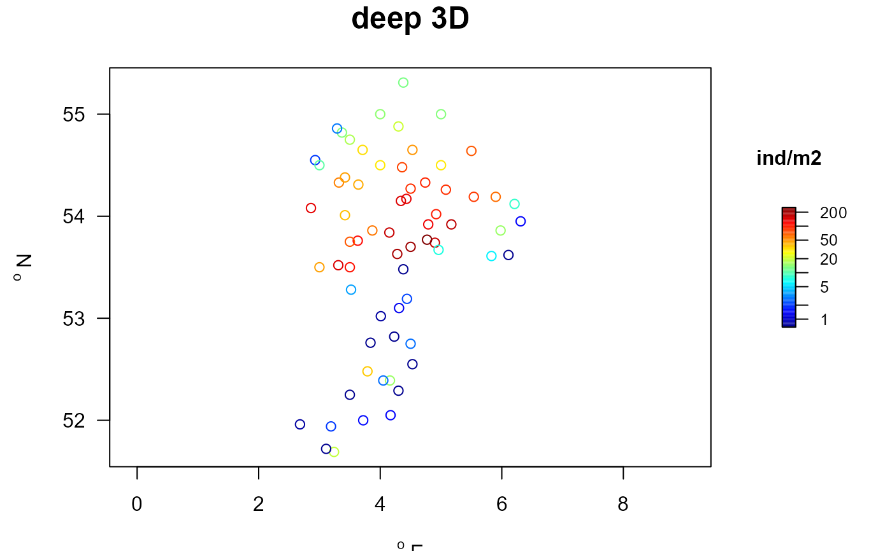

Benthic typological groups
Bgroupdata.RdMacrofauna main typological groups.
Format
**Groups** contains 11 typological species groups representing sea floor functions, as derived from a cluster analysis on species traits by Beauchard et al. (submitted).
Epi3D, Epibenthic 3D, Builders of large and complex 3D-structures on the sediment; high biodeposition ability.
Foul, Small fouling species of various substrata, such as barnacles and epibenthic tube builders; can create extended organic mats; high biodeposition ability
Neutral, species deprived of the ability to alter sediments; also characteristic of biodeposition; also slowly mobile species from hard substrata
ShalShel, Shallow shell, mostly sub-sediment surface buried bivalves; dominantly biodiffusors, shell providers; low to high biodepositors
SurfDiff, Surficial biodiffusors, with variable degrees of burying ability; no other specific attribute
SmalTub, Small tube dweller; mostly superficial tubicolous occurring in wide lawns of tubes or tube protrusions ; commonly biostabilisers, advectors (downward and upward conveying, moderate ventilation ability, with some degree of biodeposition
DeepTub, Deep tube dweller; similar to smalTub, but les tubicolous and more burrow dwellers (I- or J-shaped), and deeper burrowers; higher ventilation ability
MinBiot, Minor bioturbator, larger and less sedentary, deeper burrowing ability than DeepTub; mostly advectors
SesBio, Sessile bioturbator, deep burrowing ability, great bioirrigation potential due to wider burrow
MajBiot, Major bioturbator, deep burrowing, mobile and non-shelly; diffusive mixing
Deep3D, Deepest burrowers, long term burrows, very high level of sediment mixing and irrigation
Explanation on its contents is given in its attribute description (use metadata(Groups) to derive it)
References
The species typology is described in the following manuscript:
Olivier Beauchard, Kari Elsa Ellingsen, Murray S.A. Thompson, Gerjan Piet, Pascal Laffargue, Karline Soetaert, subm. Assessing sea floor functional diversity and vulnerability. Marine Ecology Progress Series
See also
Traits_nioz for the benthic trait datasets.
MWTL for other data sets of the Northsea.
mapBtrait for plotting.
extendTrait for functions operating on trait data.
getDensity for functions operating on density data.
getTraitDensity for functions operating on density and trait data.
getDbIndex for extracting bioturbation and bioirrigation indices.
Examples
##-----------------------------------------------------
## Show content
##-----------------------------------------------------
NSt <- metadata(Groups)
NSt
#> typology description
#> 1 Epi3D Epibenthic 3D
#> 2 Foul Fouler
#> 3 Neutral Neutral
#> 4 ShalShel Shallow shell
#> 5 SurfDiff Surficial diffusor
#> 6 SmalTub Small tube dweller
#> 7 DeepTub Deep tube dweller
#> 8 MinBiot Minor bioturbator
#> 9 SesBiot Sessile bioturbator
#> 10 MajBiot Major bioturbator
#> 11 Deep3D Deep 3D burrower
##-----------------------------------------------------
## 10 most commonly found organisms per group
##-----------------------------------------------------
MWTL.groups <- merge(MWTL$density, Groups)
for (i in 1:nrow(NSt)){
NSdta <- subset(MWTL.groups,
subset= (typology == NSt[i,1]))
st <- sort(table(NSdta$taxon), decreasing=TRUE)
cat(NSt[i,2], " : ",
paste(names(st)[1:min(10, length(st))],
deparse=", ", sep=""), "\n\n")
}
#> Epibenthic 3D : Modiolus, Mytilus edulis, Sabella spallanzanii,
#>
#> Fouler : Monocorophium insidiosum, Photis longicaudata, Thecostraca, Jassa marmorata, Spirobranchus triqueter,
#>
#> Neutral : Electra pilosa, Cucumaria, Astarte montagui, Myrianida, Musculus, Sphenia binghami,
#>
#> Shallow shell : Kurtiella bidentata, Euspira nitida, Tellimya ferruginosa, Fabulina fabula, Nucula nitidosa, Varicorbula gibba, Abra alba, Chamelea striatula, Phaxas pellucidus, Ensis leei,
#>
#> Surficial diffusor : Bathyporeia elegans, Urothoe poseidonis, Ophiura, Harpinia antennaria, Bathyporeia guilliamsoniana, Pseudocuma (Pseudocuma) longicorne, Pholoe minuta, Oxydromus flexuosus, Urothoe brevicornis, Megaluropus agilis,
#>
#> Small tube dweller : Spiophanes bombyx, Spio filicornis, Owenia, Ampelisca tenuicornis, Ampelisca brevicornis, Prionospio, Polydora, Spio goniocephala, Spio martinensis, Spio decorata,
#>
#> Deep tube dweller : Phoronis, Lanice conchilega, Lagis koreni, Capitella capitata, Galathowenia oculata, Heteromastus filiformis, Ampharete, Corophium, Thelepus cincinnatus,
#>
#> Minor bioturbator : Magelona, Goniada maculata, Chaetozone setosa, Poecilochaetus serpens, Lumbrineris, Scolelepis bonnieri, Mediomastus fragilis, Aonides paucibranchiata, Terebellides, Tharyx,
#>
#> Sessile bioturbator : Amphiura filiformis, Thracia phaseolina, Thyasira flexuosa, Chaetopterus variopedatus, Acrocnida brachiata, Paraonis fulgens, Macoma balthica, Amphiura chiajei, Turritellinella tricarinata, Lucinoma borealis,
#>
#> Major bioturbator : Nephtys, Echinocardium, Scoloplos armiger, Notomastus latericeus, Sigalion mathildae, Glycera, Scolelepis (Scolelepis) squamata, Scalibregma inflatum, Brissopsis lyrifera, Scoletoma fragilis,
#>
#> Deep 3D burrower : Callianassa, Upogebia deltaura, Gilvossius tyrrhenus, Upogebia stellata, Nephrops norvegicus, Arenicola,
#>
##-----------------------------------------------------
## Distribution of deep 3D burrowers
##-----------------------------------------------------
Data <- with (MWTL.groups,
long2wide(row = station,
column = typology,
value = density,
averageOver = year,
subset = (typology=="Deep3D")))
head(Data)
#> descriptor Deep3D
#> 1 BREEVTN02 148.3954457
#> 2 BREEVTN03 2.2116053
#> 3 BREEVTN04 1.3495277
#> 4 BREEVTN05 0.7684211
#> 5 BREEVTN06 0.6747632
#> 6 BREEVTN07 0.6747638
Data.st <- merge(MWTL$stations, Data, by.x="station", by.y="descriptor")
with (Data.st, mapBtrait(x=x, y=y, colvar=Deep3D, main="deep 3D",
clab="ind/m2", log="c"))
